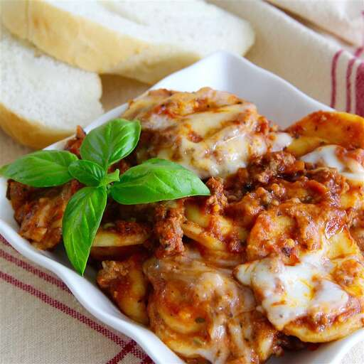

Lasagna

Description
A fantastic way to enjoy lasagna wothout all the fuss! I thought using frozen ravioli already filled with cheese
instead of layering layers of noodles and cheese would make a great dish so easy. It all comes together; just
scoop it out, serve with a salad, and enjoy.
Ingredients
- 1 pound ground beef
- 1 tablespoon chopped garlic
- 1 teaspoon garlic powder
- 1 teaspoon salt
- 1/2 teaspoon ground black pepper
- 2 (24 ounce) jars prepared pasta sauce
- 1 teaspoon Italian seasoning
- 1 teaspoon dried basil
- 1 teaspoon dried oregano
- 1 (25 ounce) package frozen cheese ravioli
- 2 cups shredded mozzarella cheese
Steps
- Heat a large skillet over medium-high heat. Cook and stir beef, garlic, garlic powder, salt, and pepper in
the hot skillet until meat is browned and crumbly, 5 to 7 minutes. Drain and discard grease. Stir pasta
sauce, Italian seasoning, basil, and oregano into ground beef mixture.
- Ladle a generous layer of meat sauce into the bottom of a slow cooker; add a layer of ravioli. Ladle another
layer of meat sauce over ravioli layer; alternate with remaining ravioli and meat sauce until all
ingredients are used.
- Cook on Low for 3 to 5 hours. Sprinkle ravioli mixture with mozzarella cheese and continue cooking until
cheese is melted, 45 minutes to 1 hour more.